Module 04 — Services complémentaires¶
La transcription du support Drive et l’aide pédagogique sont séparées pour rendre leur provenance explicite.
SOURCE DRIVE · TRANSCRIPTION DU SUPPORT
Le contenu des documents du dossier TSSR est transcrit ci-dessous, page par page. Les textes et tableaux sont intégrés à la page Web. Aucun fichier PDF, aucune diapositive entière ni aucune reproduction de page n’est affiché. Seuls des croquis ou visuels isolés et vérifiés peuvent accompagner la transcription. Les versions et les consignes restent celles des supports de formation. Les compléments IA sont conservés dans leur onglet distinct.
Support · Module 04 - Support de cours · 24 pages transcrites
Transcription du document source. Les parcours et libellés historiques sont conservés. Les mots de passe, codes de validation et coordonnées nominatives sont neutralisés. Les noms de domaine d’accès des exemples utilisent des domaines réservés à la documentation.
Module 04 – Services complémentaires
Objectifs
- Déployer le pack Office aux postes clients
- Maîtriser les enjeux de configuration sur OneDrive
- Mettre en place des sites SharePoint sécurisés
- Cadrer l’usage de Teams
Déploiement du Pack Office
Office Online
- Microsoft Word Online
- Microsoft OneNote Online
- Microsoft PowerPoint Online
- Microsoft Excel Online
Déploiement du Pack Office
Office 365 client inclus
- Microsoft Office 365 ProPlus
- Microsoft SharePoint Designer
- Microsoft Visio
- Microsoft Project Professionnel
- Microsoft Office Online
- Microsoft Office pour Mac
- Application Office pour iPad, iPhone et iPod touch
- Application Office pour Android
Déploiement du Pack Office
Les nouvelles fonctionnalités depuis Office 2016
- Le co-authoring
- L'intégration OneDrive
- L'intégration Teams
- Le support multiplateforme
- La priorisation des mails dans Outlook
Déploiement du Pack Office
Office 365 ProPlus
- Gestion des mises à jour
- Mises à jour de sécurité
- Mises à jour des nouvelles fonctionnalités
- Trois options possibles
- Canal mensuel
- Mise à jour mensuelle
- Canal semi-annuel
- Tous les six mois (en janvier et juillet)
- Canal semi-annuel ciblé
- Tous les six mois (en mars et septembre) à des utilisateurs pilotes
Déploiement du Pack Office
Office 365 ProPlus
- Gestion des installations par l’utilisateur
Déploiement du Pack Office
Office 365 ProPlus
- Gestion des installations par l’utilisateur
Dans les options de
chaque utilisateur
Dans Paramètres/services
et compléments
Déploiement du Pack Office Installation d’Office 365 ProPlus avec sources locales
Crêpes.local
213.186.33.20
D:\data\O365
CDN Microsoft
Serveur AD Serveur DNS
https://config.office.com/
Exemple représenté
- Créer un partage sur un serveur membre, dans D:\data\O365, puis configurer le fichier XML pour paramétrer ce qui est téléchargé et installé.


Déploiement du Pack Office Installation d’Office 365 ProPlus avec sources locales
PS D:\data\office_365> .\setup.exe /download \\SM01\office_365\Configuration.xml
Crêpes.local
213.186.33.20
D:\data\O365
D:\data\O365\ODT.exe
CDN Microsoft
Serveur AD Serveur DNS
Déploiement du Pack Office Installation d’Office 365 ProPlus avec sources locales
PS D:\data\office_365> .\setup.exe /configure \\SM01\office_365\Configuration.xml
Crêpes.local
213.186.33.20
D:\data\O365
CDN Microsoft
Serveur AD Serveur DNS
Exemple représenté
- Installer OfficeDeploymentTools sur le serveur membre puis télécharger les sources depuis les CDN Microsoft vers le partage.
- Exécuter l’installation en ligne de commande ou la lancer via une GPO.

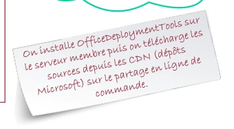

Déploiement du Pack Office
Annexe 1 : Déploiement Office 365 ProPlus par GPO
- Créer un partage nommé : Office_365 sur votre contrôleur de domaine (pas à la racine de C:\). 2. Extraire officedeploymenttool.exe dans ce répertoire. Vous devez avoir ceci
- Vous pouvez utiliser les modèles .xml ci-dessus ou utiliser le site :
https://config.office.com/
Déploiement du Pack Office
Annexe 1 : Déploiement Office 365 ProPlus par GPO
4. Choisir votre architecture

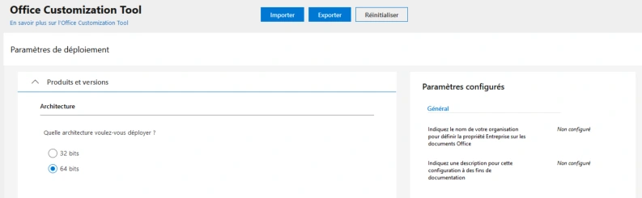
Déploiement du Pack Office
Annexe 1 : Déploiement Office 365 ProPlus par GPO
5. Choisir les logiciels que vous voulez déployer
6. Choisir le canal de mise à jour
Déploiement du Pack Office
Annexe 1 : Déploiement Office 365 ProPlus par GPO
7. Choisir les langues
8. Choisir les options d’installation supplémentaire

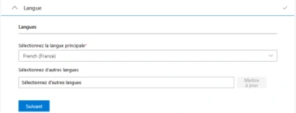

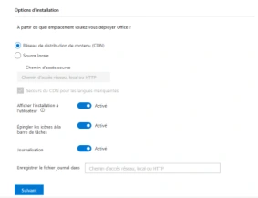
Déploiement du Pack Office
Annexe 1 : Déploiement Office 365 ProPlus par GPO
9. Choisir les options de mise à niveau
Déploiement du Pack Office
Annexe 1 : Déploiement Office 365 ProPlus par GPO
10. Gérer les licences

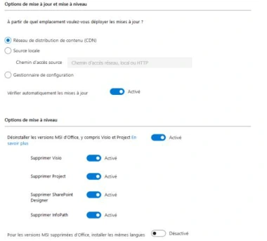

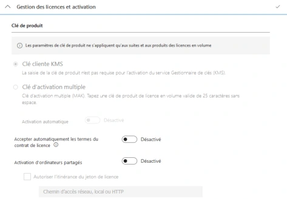
Déploiement du Pack Office
Annexe 1 : Déploiement Office 365 ProPlus par GPO
11. Informations générales
Déploiement du Pack Office
Annexe 1 : Déploiement Office 365 ProPlus par GPO
12. Exporter
13. Le .xml est généré
Configuration XML de la capture
<Configuration>
<Info Description="déploiement office 365 pour l’organisation de laboratoire" />
<Add OfficeClientEdition="64" Channel="Monthly" AllowCdnFallback="TRUE" ForceUpgrade="TRUE">
<Product ID="O365ProPlusRetail">
<Language ID="fr-fr" />
<ExcludeApp ID="Groove" />
<ExcludeApp ID="OneNote" />
<ExcludeApp ID="Publisher" />
</Product>
</Add>
<Property Name="SharedComputerLicensing" Value="0" />
<Property Name="PinIconsToTaskbar" Value="TRUE" />
<Property Name="SCLCacheOverride" Value="0" />
<Updates Enabled="TRUE" />
<RemoveMSI All="TRUE" />
<AppSettings>
<Setup Name="Company" Value="Organisation de laboratoire" />
</AppSettings>
</Configuration>
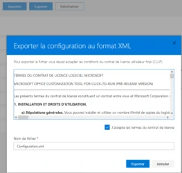
Déploiement du Pack Office
Annexe 1 : Déploiement Office 365 ProPlus par GPO
- Télécharger les fichiers d'installation d'office avec Office Deployment Tool
PS C:\users\administrator\office_365> .\setup.exe /download \\cd01\office_365\Configuration.xml
- Une fois le téléchargement effectué, créer une OU pour la ou les machines sur lesquelles vous voulez déployer Office365 ProPlus
Déploiement du Pack Office
Annexe 1 : Déploiement Office 365 ProPlus par GPO
16. Créer une GPO sur l'OU qui contient vos machines
Déploiement du Pack Office
Annexe 1 : Déploiement Office 365 ProPlus par GPO
17. Éditez la GPO, allez dans Scripts puis ShowFiles
Déploiement du Pack Office
Annexe 1 : Déploiement Office 365 ProPlus par GPO
- Créez un fichier avec Notepad et changez l'extension en .cmd
- Cliquez sur Add et sélectionnez votre script 20. Connectez-vous sur la machine cliente (l'utilisateur doit être administrateur local)
PS C:\users\administrator\office_365> gpupdate /force
- Redémarrez la machine et vérifiez que ce processus est en route
Commande du script de démarrage
\\cd01\Office_365\setup.exe /configure \\cd01\Office_365\Configuration.xml

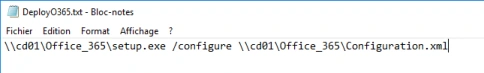
Administrer OneDrive
L’administration OneDrive
- Le centre d'administration OneDrive permet de gérer les fonctionnalités :
- De partage
- De synchronisation
- De stockage
Administrer OneDrive
L’administration des partages OneDrive
- Administrez le type de lien par défaut
- Vérifiez les droits applicables au lien
Administrer OneDrive
Les partages externes OneDrive
- Une sécurité plus importante peut être mise en place pour les partages externes

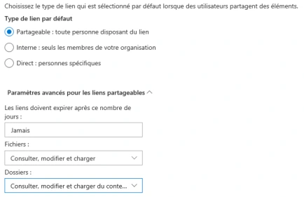

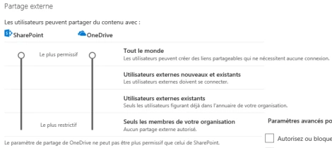

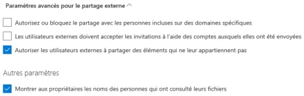
Administrer OneDrive
La synchronisation OneDrive
- La synchronisation de vos clients OneDrive peut occasionner des latences sur votre réseau
- La première synchronisation de vos clients est consommatrice de bande passante
- Le client utilise ensuite la synchronisation différentielle afin de ne synchroniser que la partie modifiée d'un document
Administrer OneDrive
Gestion des appareils OneDrive
- Vous pouvez spécifier des plages d'adresse IP ou des appareils qui auront accès à OneDrive

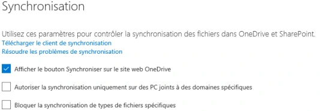

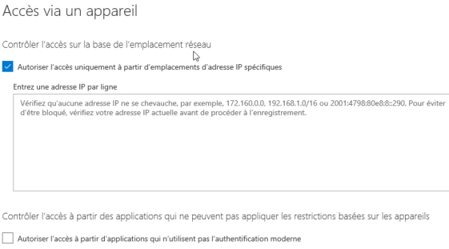
Administrer SharePoint
Administrer SharePoint OneDrive vs SharePoint
1 To
Administrer SharePoint
SharePoint
- L’utilisation de SharePoint Online entre désormais dans les standards des systèmes d’information
- Ses nombreux atouts comme la disponibilité, le multiplateforme, la coédition en font un outil à forte valeur ajoutée
- Inclus dans la majeure partie des abonnements
- Limite la gestion de serveurs et stockage en interne
Administrer SharePoint
SharePoint
- De multiples usages de SharePoint sont possibles :
- Création de bibliothèques de document
- Création de sites Web internes
- Créer des listes
- …
- SharePoint est le socle sur lequel repose Teams
Administrer SharePoint
Les limites
Microsoft 365 Business Basic,
Microsoft 365 F1 ou
Fonctionnalité
Business Standard ou
Microsoft 365 E3 ou E5, Office 365 E1, E3 ou E5, ou
F3, Office 365 F3
Business Premium
SharePoint Plan 1 ou 2
Stockage total par
organisation 1 To plus 10 Go par licence achetée 3 1 To plus 10 Go par licence achetée 1 To
4 25 To 25 To 25 To
Stockage maximum par site (collection de sites)
Sites (collections de sites)
par organisation 2 millions 2 millions 2 millions
Nombre d'utilisateurs Jusqu'à 300 1 - 500 000 1 - 500 000
Source : https://docs.microsoft.com/fr-fr/office365/servicedescriptions/sharepoint-online-service-description/sharepoint-online-limits
Administrer SharePoint
Création d’un site
- Pour héberger vos applications ou documents, il faudra créer un site
- Ce site servira ensuite de conteneur pour l’ensemble de vos ressources
| Fonctionnalité | Microsoft365BusinessBasic , BusinessStandardou BusinessPremium | Microsoft365E3ouE5 , Office365E1 E3ouE5 ou , , SharePointPlan1ou2 | Microsoft365F1ou F3 Office365F3 , |
|---|---|---|---|
| Stockagetotalpar organisation | 1Toplus10Goparlicenceachetée3 | 1Toplus10Goparlicenceachetée | 1To |
| Stockagemaximumpar site(collec tiondesit es)4 | 25To | 25To | 25To |
| Sites(collectionsdesites) parorganisation | 2millions | 2millions | 2millions |
| Nombred'utilisateurs | Jusqu'à300 | 1 - 500 000 | 1 - 500 000 |
Administrer SharePoint
Création de bibliothèques de documents
- L’un des usages les plus fréquents est la création de bibliothèques de documents
- Permet de partager des documents avec des utilisateurs internes ou externes
- L’accès aux documents peut être sécurisé (permissions d’accès)
- Utilisable sur smartphones et tablettes via une application
- Laisser le droit à l’ensemble des utilisateurs de créer des sites peut être synonyme de perte de maîtrise des données de l’entreprise
Administrer SharePoint
Points de vigilance
- La synchronisation hors connexion sur l’ensemble d’une bibliothèque peut créer de lourds dysfonctionnements et des pertes de données lorsqu’elle est mal utilisée
- La gestion des permissions peut devenir complexe, préférez la simplicité et la segmentation
- Attention aux données qui seront à héberger sur Sharepoint Online, les fichiers d’application métier (type Photoshop) pourront avoir un effet néfaste sur le confort de travail
Administrer Teams
Un usage croissant
- Teams est devenu l’outil incontournable du travail collaboratif
- Microsoft a révélé avoir atteint 115 millions d’utilisateurs actifs quotidiens après une impressionnante croissance tout au long de l’année 2020
- Ce total a été porté en 2 mois en contexte de pandémie mondiale seulement
- Microsoft avait initialement envisagé cette croissance en deux ans
- Cette évolution massive a pu démontrer la puissance de l’éditeur et la robustesse de ses solutions, un atout supplémentaire
Administrer Teams
Gestion
- Les fonctionnalités phares comme les équipes et la possibilité de créer des réunions en quelques clics en font un outil puissant mais également dangereux
- À l’image de la création de sites SharePoint, la multiplication d’équipes et une éventuelle ouverture publique de celles-ci peuvent engendrer des fuites de données
- Un panneau d’administration est disponible et va permettre de limiter ces usages
Administrer Teams
Limiter la création des équipes
- Conserver la maîtrise de l’environnement Microsoft 365 est essentiel pour une entreprise
- Bon nombre d’administrateurs se rendent compte trop tard que des débordements ont eu lieu et il est difficile de revenir en arrière
- Former un groupe restreint d’utilisateurs et les responsabiliser
- Il est possible de limiter la création de groupes M365 et donc d’équipes en 3 étapes :
- Création d’un groupe qui sera autorisé à créer des groupes M365 2. Application d’un script fourni par Microsoft 3. Vérification
Administrer Teams
Gestion des équipes
- Vous avez la main sur les différentes équipes créées au sein de votre tenant
- Paramétrez le niveau de confidentialité de l’équipe et les différents usages et fonctionnalités disponibles pour les membres
Administrer Teams
Gestion des équipes
- Ajoutez des canaux et maîtrisez les membres pour segmenter l’équipe et les accès aux différents canaux
- Paramétrez le niveau de confidentialité de l’équipe et les différents usages et fonctionnalités disponibles pour les membres

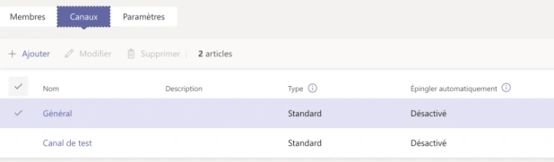
Administrer Teams
Gestion des réunions
- Pour cadrer l’usage de la fonctionnalité dans les réunions Teams, il est possible et recommandé de définir des stratégies
- Elles seront ensuite affectées à un groupe d’utilisateurs
Administrer Teams
Gestion des réunions
- Gestion des paramètres audio/vidéo
- Partage de contenu
- Gestion des participants


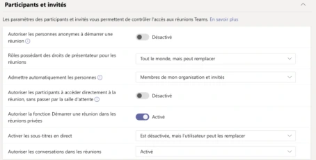
Administrer Teams
Paramétrage de l’organisation
- Les paramètres à l’échelle de l’organisation vous permettront de définir les fonctionnalités activées lors des appels, réunions ou utilisation de la messagerie pour les utilisateurs invités
- Vous pourrez également maîtriser l’utilisation d’applications tierces de partage de fichiers comme Dropbox ou Google Drive
Référence du document : 1GLjA5f2bv_wItuCtVq5gmJ00cfvMr4k_ · SHA-256 30380f017a48637a…
Énoncé · M4 - Énoncé du TP 1 - Déploiement Office 365 · 1 pages transcrites
Transcription du document source. Les parcours et libellés historiques sont conservés. Les mots de passe, codes de validation et coordonnées nominatives sont neutralisés. Les noms de domaine d’accès des exemples utilisent des domaines réservés à la documentation.
Déploiement Microsoft 365
TP 01 du Module 04 – Services complémentaires
Avant de démarrer ce TP, il convient d’avoir suivi les vidéos des modules 1 à 4 et d’avoir réalisé les TP proposés.
Enoncé
Objectifs
Déployer et gérer les installations Microsoft 365 Prérequis
Avoir une connexion internet Principales tâches à réaliser
- Installez une nouvelle machine cliente W10 nommé Client2.
- Intégrez-la à votre domaine Active Directory.
- Empêchez vos utilisateurs de télécharger Microsoft 365.
- Vérifiez en vous connectant sur le portal Microsoft 365avec John DOE.
- Mettez en place le déploiement de Microsoft 365par GPO sur la machine Client2.
- Faites une procédure.
Référence du document : 1Nh_4blT_klGJjhXhSJE754bpm5t90Ebx · SHA-256 a61f9b4317b5488d…
Énoncé · M4 - Énoncé du TP2 - Administration SharePoint et OneDrive · 1 pages transcrites
Transcription du document source. Les parcours et libellés historiques sont conservés. Les mots de passe, codes de validation et coordonnées nominatives sont neutralisés. Les noms de domaine d’accès des exemples utilisent des domaines réservés à la documentation.
Administration SharePoint et OneDrive
TP 02 du Module 04 – Services complémentaires
Avant de démarrer ce TP, il convient d’avoir suivi les vidéos des modules 1 à 4 et d’avoir réalisé les TP proposés.
Enoncé
Objectifs
Administrer SharePoint Online Prérequis
Avoir une connexion internet Principales tâches à réaliser
- Créez une bibliothèque de documents en respectant les bonnes pratiques exposées dans le cours.
o Création de Groupes de domaine locaux dans l’AD / Synchronisation ADConnect
o Application des permissions adaptées et nettoyage des entrées inutileso Limitez le téléchargement hors connexion, les partages externes et invitationsainsi que les demandes d’accès.
Référence du document : 1A9Y6kqGcVxuZTFK7bD0UGUG9HPCu72g9 · SHA-256 f04b735edcb54e16…
Correction · M4 - Solution du TP 1 - Déploiement Office 365 · 3 pages transcrites
Transcription du document source. Les parcours et libellés historiques sont conservés. Les mots de passe, codes de validation et coordonnées nominatives sont neutralisés. Les noms de domaine d’accès des exemples utilisent des domaines réservés à la documentation.
Correction originale : à consulter après avoir tenté l’exercice.
Déploiement Microsoft 365
TP 01 du Module 04 – Services complémentaires
Avant de démarrer ce TP, il convient d’avoir suivi les vidéos des modules 1 à 4 et d’avoir réalisé les TP proposés.
Solution
Bloquer le téléchargement d’Office
- Rendez-vous dans les paramètres de téléchargement des logiciels Office et désactivez la possibilité pour les utilisateurs d’installer le pack Office.
Déploiement du pack Office manuellement
- En allant sur le site https://www.microsoft.com/en-us/download/details.aspx?id=49117; vous pouvez télécharger l’outil de déploiement pour le pack Office 365.

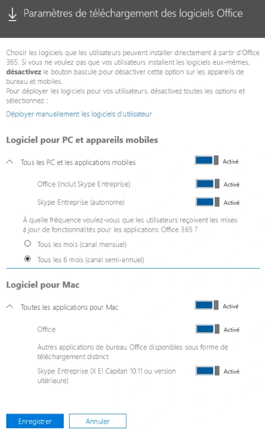
- Créez un partage sur votre serveur, de préférence dans une partition D:\ prévue à cet effet.
- Déposez le contenu du package téléchargé au préalable.
Vous pouvez au choix utiliser les fichiers XML présents par défaut, ou personnaliser le déploiement à l’aide du site https://config.office.com/.
- Lancez le téléchargement des sources grâce à la commande :
PS D:\office_365> .\setup.exe /download \\Serveur\partage créé\Configuration.xmlVous pouvez maintenant installer le pack Office :
D:\office_365> .\setup.exe /configure \\Serveur\partage créé\Configuration.xml- Créez ensuite la GPO :
- Créez un fichier Notepad, glissez la ligne de commande précédente et transformez l’extension du fichier en .cmd.
- Editez la GPO, allez dans Configuration ordinateur / Paramètres Windows / Scripts de démarrage / Arrêt et ajoutez le script créé précédemment.
NB : le partage dans lequel est placé le script doit être lisible des utilisateurs impactés par la GPO.
Commande de la capture du script de démarrage
\\cd01\Office_365\setup.exe /configure \\cd01\Office_365\Configuration.xml
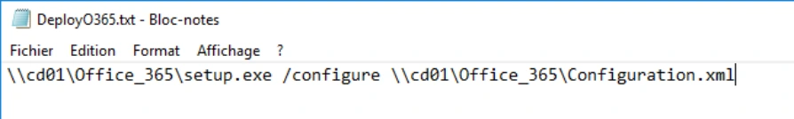
PS C:\users\administrator\office_365> gpupdate /force- Redémarrez la machine et vérifiez que le pack Office est bien installé.

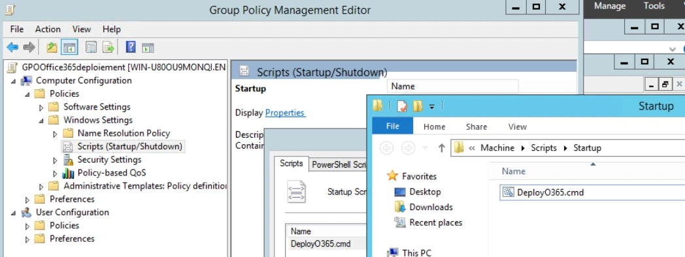
Référence du document : 11qy2tWr5VU5QdKrj8Ztldb3XcGN1NgnS · SHA-256 3ec56eac14b68e7b…
Correction · M4 - Solution du TP2 - Administration SharePoint et OneDrive · 11 pages transcrites
Transcription du document source. Les parcours et libellés historiques sont conservés. Les mots de passe, codes de validation et coordonnées nominatives sont neutralisés. Les noms de domaine d’accès des exemples utilisent des domaines réservés à la documentation.
Correction originale : à consulter après avoir tenté l’exercice.
Administration SharePoint et OneDrive
TP 02 du Module 04 – Services complémentaires
Avant de démarrer ce TP, il convient d’avoir suivi les vidéos des modules 1 à 4 et d’avoir réalisé les TP proposés.
Solution
Administration OneDrive
- Connectez-vous sur https://login.microsoftonline.com/ et utilisez vos identifiants de connexion créés dans l’étape précédente.
Parcours de l’ensemble des options proposées
- Administration SharePoint – Création d’un site
- Allez dans le panneau d’administration SharePoint, cliquez sur Sites, Sites actifs puis Créer.
- Cliquez sur Autres options.
- Choisissez le modèle Centre de documents, nommez le site, ajoutez le propriétaire et sélectionnez la langue et le fuseau horaire.
- N’ajoutez pas de membres pour le moment et terminez la création du site. Revenez ensuite sur la liste des sites actifs et cliquez sur l’URL du site.
- A l’image des pratiques sur des serveurs de fichiers On Premise, nous allons utiliser AGDLP pour gérer les permissions d’accès à notre site. Créez deux groupes de domaine local dans l’unité d’organisation Groupes puis forcez la synchronisation.
- Ajoutez GG_ServiceIT dans le groupe GDL_SP_Fichiers_RW
- Sur le site SharePoint Fichiers de l’entreprise, cliquez sur la roue dentée puis Paramètres du site.
- Cliquez sur Autorisations de site.
- Cliquez sur Accorder des autorisations puis ajoutez le groupe GDL_SP_Fichiers_RW créé, affichez les options et sélectionnez collaboration.

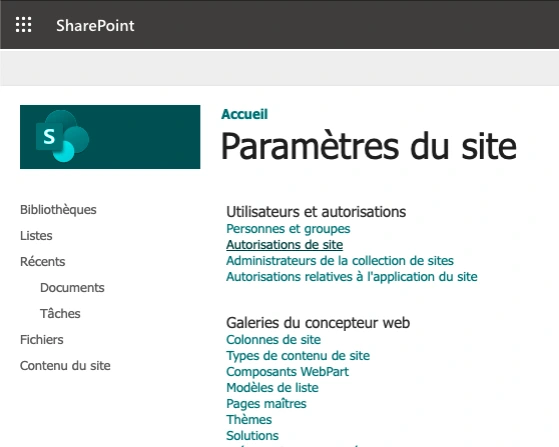

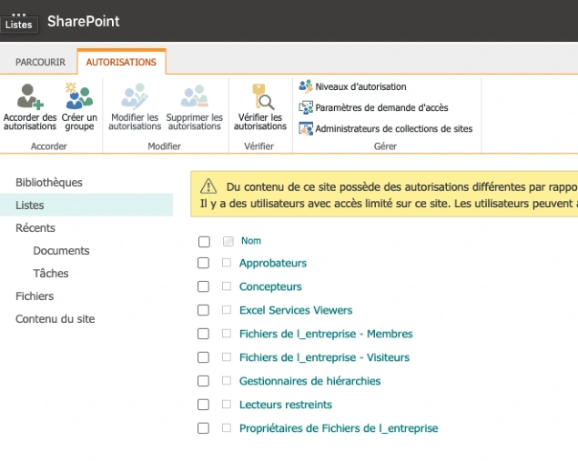
- Cliquez sur Accorder des autorisations puis ajoutez le groupe GDL_SP_Fichiers_RO créé, affichez les options et sélectionnez Visiteurs.

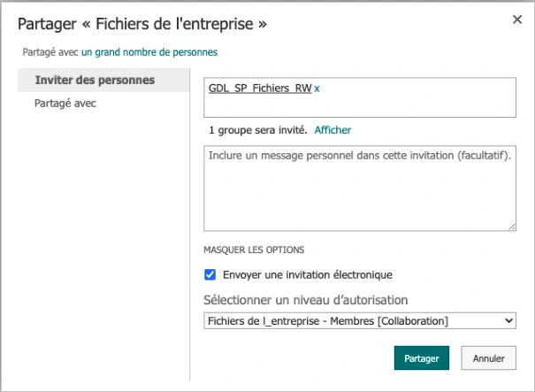

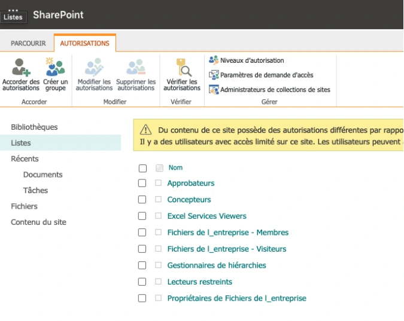
- Afin de clarifier la gestion dans le futur, vous pouvez supprimer les autorisations par défaut positionnées par SharePoint.
- Cliquez ensuite sur Visiteurs et supprimez l’entrée All company.

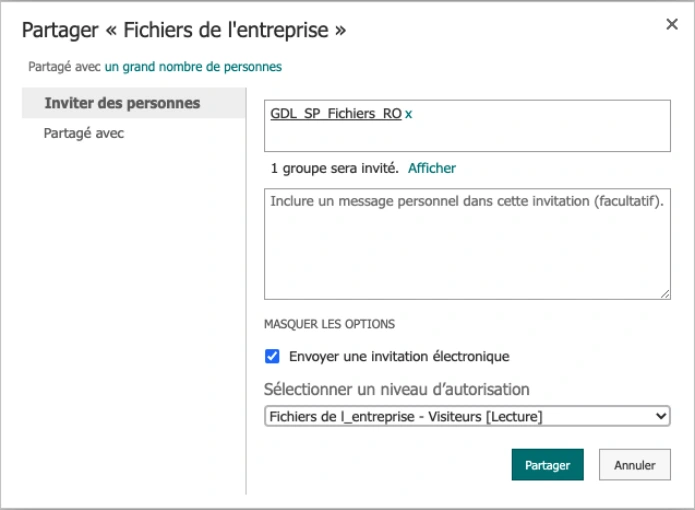

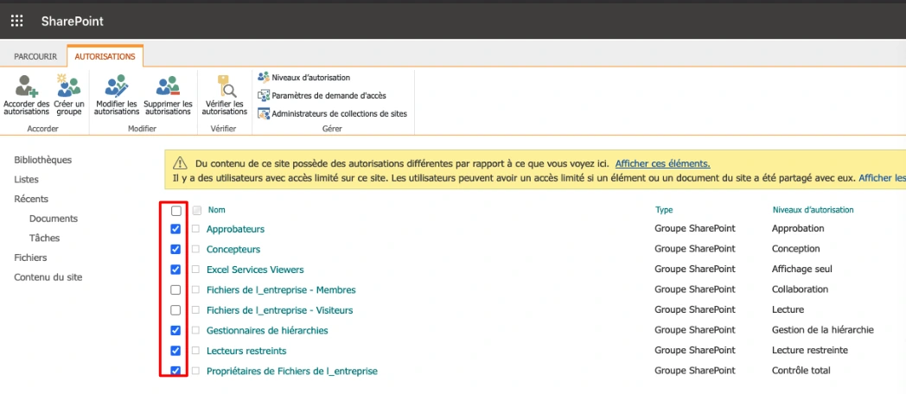
Quelques bonnes pratiques
Il est possible de nettoyer l’affichage afin de clarifier l’ensemble des éléments affichés.
- Cliquez sur Modifier dans le volet à gauche pour masquer les éléments jugés inutiles.

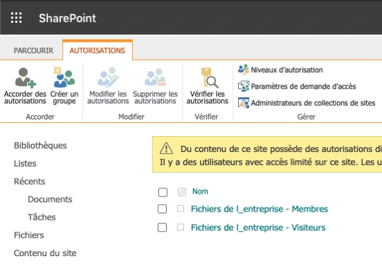

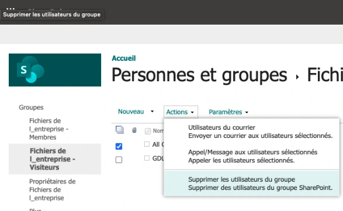
Vous pouvez désactiver la synchronisation hors connexion sur les sites et ainsi protéger les données d’éventuelles erreurs de synchronisation. Il est possible de le faire au niveau du site ou de chaque bibliothèque.
- Cliquez sur la roue dentée puis Paramètres du site.
- Dans la section Rechercher cliquez sur Disponibilité du mode Hors connexion.
Option affichée pour le mode hors connexion
- À la question « Voulez-vous autoriser le téléchargement des éléments de ce site sur les clients en mode hors connexion ? », choisir « Non ».

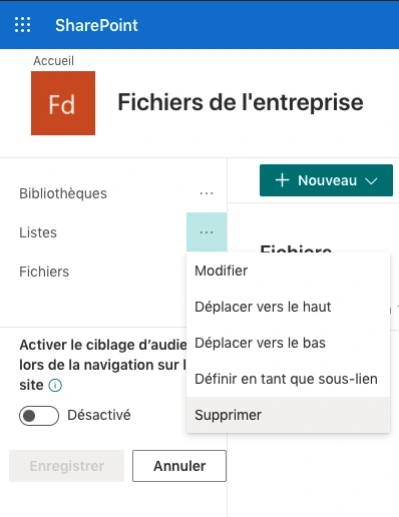

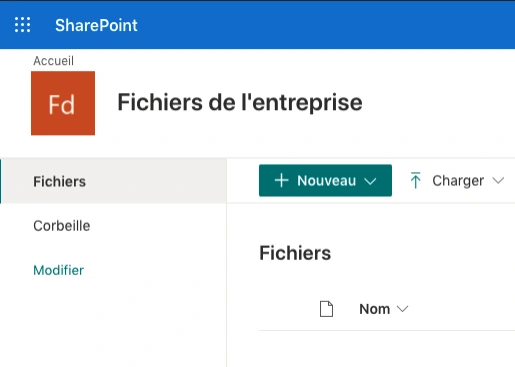
- Afin de limiter les fuites de données et les demandes d’accès intempestives, vous pouvez restreindre cela en allant dans les autorisations de site puis Paramètres de demande d’accès.

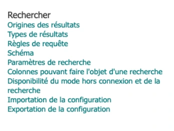

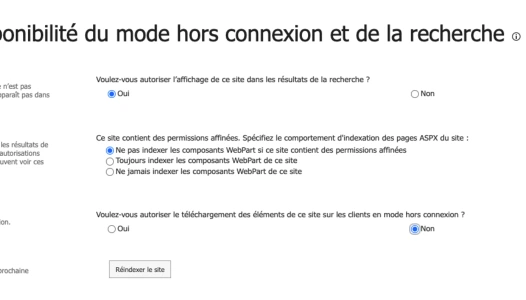
- Décochez les 3 cases présentées et cliquez sur OK.
Cases affichées dans la capture des paramètres de demandes d’accès
- Autoriser les membres et propriétaires à partager le site, des fichiers et des dossiers.
- Autoriser les membres à inviter d’autres personnes dans le groupe des membres du site.
- Autoriser les demandes d’accès.

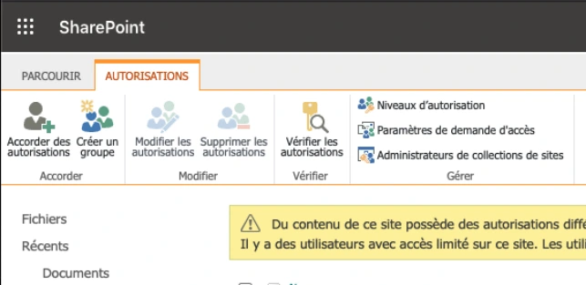

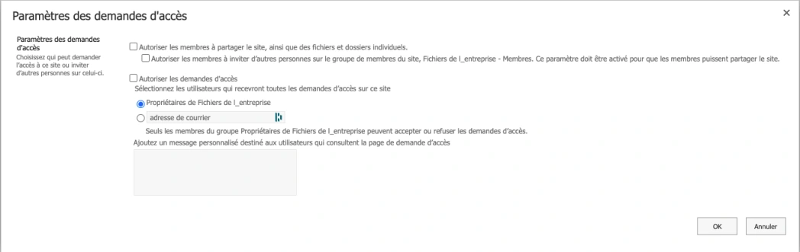
Référence du document : 1NFVLCn71-19tdQ1gyOGCdIZQ188D2HS9 · SHA-256 5cb1e4dbf1ad8029…
Complément IA / externe au cours — fiche pédagogique du portail
Cette fiche contient une reformulation et des aides d’apprentissage rédigées par IA. Elle est distincte de la transcription des documents du Drive et ne la remplace pas. Les schémas de synthèse de cette fiche sont des illustrations IA / externes au cours, sauf les captures explicitement attribuées à un document source.
Cours optimisé · aide pédagogique¶
Les explications, schémas de synthèse et contrôles de cette partie accompagnent le support. Consulter la transcription originale et ses visuels.
Déployer Microsoft 365 Apps¶
Le TP part d’un poste Windows 10 joint au domaine. L’administrateur contrôle le téléchargement proposé à l’utilisateur puis prépare le déploiement administré. L’outil ODT lit une configuration XML. Cette configuration fixe notamment l’architecture, la langue, les produits, les applications exclues, le canal et les sources. La phase /download prépare les fichiers, puis /configure applique la configuration au poste. Vue d’ensemble de l’Office Deployment Tool.
| Étape | Vérification |
|---|---|
| Préparer le XML | Architecture, langue, canal et produits compatibles avec les postes et licences du labo |
| Télécharger les sources | Vérifier le partage, le contenu et les droits de lecture |
| Lier la GPO | Placer le poste pilote dans l’OU ciblée, vérifier le lien et le filtrage |
| Redémarrer | Observer l’application de la GPO et l’apparition des applications attendues |
| Tester côté utilisateur | Vérifier l’ouverture d’une application, la connexion et l’activation |
Le script de démarrage s’exécute en contexte ordinateur. Donnez à la machine pilote l’accès de lecture au chemin UNC et conservez le contrôle d’écriture du partage côté administrateurs. Relevez le résultat de la stratégie et l’état du poste pour dissocier un problème GPO d’un problème ODT ou de licence.
OneDrive, SharePoint et Teams¶
OneDrive sert au stockage de travail individuel et au partage contrôlé. SharePoint fournit des sites et bibliothèques d’équipe. Teams associe des conversations, réunions et fichiers aux espaces de collaboration. Pour une demande d’accès, identifiez d’abord le site ou la bibliothèque et l’objet qui porte les permissions, puis vérifiez le rôle effectif.
| Niveau | Exemple de question |
|---|---|
| Organisation | Le partage externe est-il autorisé et pour quels destinataires ? |
| Site | La politique du site permet-elle ce partage et quelle est la portée du lien ? |
| Bibliothèque ou élément | Les permissions sont-elles héritées ou uniques ? |
| Utilisateur | Quel groupe donne Lecture ou Collaboration et que peut faire le compte de test ? |
Le corrigé applique un modèle AGDLP local puis tente l’attribution dans SharePoint. Vérifiez la remontée des groupes et l’évaluation effective de l’imbrication dans l’environnement. Le site peut restreindre le partage défini au niveau organisation. Vérifiez les deux niveaux et testez un invité avant de conclure. Vue d’ensemble du partage externe dans SharePoint et OneDrive.
Schéma externe au support¶
Le support présente les réglages de liens, le contrôle de synchronisation hors connexion et les demandes d’accès. Testez séparément la lecture web, l’édition, la disponibilité hors connexion et le partage à un destinataire externe. Dans Teams, relevez la stratégie appliquée aux utilisateurs ou groupes et vérifiez les droits des invités lors d’une réunion de test.
Mini-quiz¶
- Quelle étape ODT prépare les fichiers pour les postes ?
- Pourquoi le script de démarrage peut-il échouer alors que le partage s’ouvre dans la session administrateur ?
- Comment vérifier le rôle Lecture dans SharePoint ?
Réponses
- /download.
- Il s’exécute dans le contexte ordinateur. Vérifier les droits du compte ordinateur et l’accès UNC au démarrage.
- Ouvrir la bibliothèque avec un membre du groupe Lecture, consulter un document et vérifier que l’édition est refusée.
Repères dans le support¶
| Pages | Sujet |
|---|---|
| 1–4 | Objectifs, produits et options |
| 5–12 | Préparation et déploiement du pack Office |
| 13–15 | Administration OneDrive |
| 16–19 | Administration SharePoint |
| 20–24 | Administration Teams |
Contenu du support par page¶
Les titres, exemples et libellés ci-dessous reprennent la transcription. Les figures isolées sont consultables dans la page correspondante.
Page 1¶
Module 04 – Services complémentaires¶
Objectifs¶
- Déployer le pack Office aux postes clients
- Maîtriser les enjeux de configuration sur OneDrive
- Mettre en place des sites SharePoint sécurisés
- Cadrer l’usage de Teams
Page 2¶
Déploiement du Pack Office¶
Office Online¶
- Microsoft Word Online
- Microsoft OneNote Online
- Microsoft PowerPoint Online
- Microsoft Excel Online
Page 3¶
Déploiement du Pack Office¶
Office 365 client inclus¶
- Microsoft Office 365 ProPlus
- Microsoft SharePoint Designer
- Microsoft Visio
- Microsoft Project Professionnel
- Microsoft Office Online
- Microsoft Office pour Mac
- Application Office pour iPad, iPhone et iPod touch
- Application Office pour Android
Déploiement du Pack Office¶
Les nouvelles fonctionnalités depuis Office 2016¶
- Le co-authoring
- L'intégration OneDrive
- L'intégration Teams
- Le support multiplateforme
- La priorisation des mails dans Outlook
Page 4¶
Déploiement du Pack Office¶
Office 365 ProPlus¶
- Gestion des mises à jour
- Mises à jour de sécurité
- Mises à jour des nouvelles fonctionnalités
- Trois options possibles
- Canal mensuel
- Mise à jour mensuelle
- Canal semi-annuel
- Tous les six mois (en janvier et juillet)
- Canal semi-annuel ciblé
- Tous les six mois (en mars et septembre) à des utilisateurs pilotes
Déploiement du Pack Office¶
Office 365 ProPlus¶
- Gestion des installations par l’utilisateur
Page 5¶
Déploiement du Pack Office¶
Office 365 ProPlus¶
- Gestion des installations par l’utilisateur
Dans les options de¶
chaque utilisateur¶
Dans Paramètres/services¶
et compléments¶
Déploiement du Pack Office Installation d’Office 365 ProPlus avec sources locales
Crêpes.local¶
213.186.33.20¶
D:\data\O365¶
CDN Microsoft¶
Serveur AD Serveur DNS¶
https://config.office.com/
Exemple représenté¶
- Créer un partage sur un serveur membre, dans D:\data\O365, puis configurer le fichier XML pour paramétrer ce qui est téléchargé et installé.
Page 6¶
Déploiement du Pack Office Installation d’Office 365 ProPlus avec sources locales
PS D:\data\office_365> .\setup.exe /download \SM01\office_365\Configuration.xml
Crêpes.local¶
213.186.33.20¶
D:\data\O365¶
D:\data\O365\ODT.exe¶
CDN Microsoft¶
Serveur AD Serveur DNS¶
Déploiement du Pack Office Installation d’Office 365 ProPlus avec sources locales
PS D:\data\office_365> .\setup.exe /configure \SM01\office_365\Configuration.xml
Crêpes.local¶
213.186.33.20¶
D:\data\O365¶
CDN Microsoft¶
Serveur AD Serveur DNS¶
Exemple représenté¶
- Installer OfficeDeploymentTools sur le serveur membre puis télécharger les sources depuis les CDN Microsoft vers le partage.
- Exécuter l’installation en ligne de commande ou la lancer via une GPO.
Page 7¶
Déploiement du Pack Office¶
Annexe 1 : Déploiement Office 365 ProPlus par GPO¶
- Créer un partage nommé : Office_365 sur votre contrôleur de domaine (pas à la racine de C:). 2. Extraire officedeploymenttool.exe dans ce répertoire. Vous devez avoir ceci
- Vous pouvez utiliser les modèles .xml ci-dessus ou utiliser le site :
https://config.office.com/
Déploiement du Pack Office¶
Annexe 1 : Déploiement Office 365 ProPlus par GPO¶
4. Choisir votre architecture¶
Page 8¶
Déploiement du Pack Office¶
Annexe 1 : Déploiement Office 365 ProPlus par GPO¶
5. Choisir les logiciels que vous voulez déployer¶
6. Choisir le canal de mise à jour¶
Déploiement du Pack Office¶
Annexe 1 : Déploiement Office 365 ProPlus par GPO¶
7. Choisir les langues¶
8. Choisir les options d’installation supplémentaire¶
Page 9¶
Déploiement du Pack Office¶
Annexe 1 : Déploiement Office 365 ProPlus par GPO¶
9. Choisir les options de mise à niveau¶
Déploiement du Pack Office¶
Annexe 1 : Déploiement Office 365 ProPlus par GPO¶
10. Gérer les licences¶
Page 10¶
Déploiement du Pack Office¶
Annexe 1 : Déploiement Office 365 ProPlus par GPO¶
11. Informations générales¶
Déploiement du Pack Office¶
Annexe 1 : Déploiement Office 365 ProPlus par GPO¶
12. Exporter¶
13. Le .xml est généré¶
Configuration XML de la capture¶
<Configuration>
<Info Description="déploiement office 365 pour l’organisation de laboratoire" />
<Add OfficeClientEdition="64" Channel="Monthly" AllowCdnFallback="TRUE" ForceUpgrade="TRUE">
<Product ID="O365ProPlusRetail">
<Language ID="fr-fr" />
<ExcludeApp ID="Groove" />
<ExcludeApp ID="OneNote" />
<ExcludeApp ID="Publisher" />
</Product>
</Add>
<Property Name="SharedComputerLicensing" Value="0" />
<Property Name="PinIconsToTaskbar" Value="TRUE" />
<Property Name="SCLCacheOverride" Value="0" />
<Updates Enabled="TRUE" />
<RemoveMSI All="TRUE" />
<AppSettings>
<Setup Name="Company" Value="Organisation de laboratoire" />
</AppSettings>
</Configuration>
Page 11¶
Déploiement du Pack Office¶
Annexe 1 : Déploiement Office 365 ProPlus par GPO¶
- Télécharger les fichiers d'installation d'office avec Office Deployment Tool
PS C:\users\administrator\office_365> .\setup.exe /download \cd01\office_365\Configuration.xml
- Une fois le téléchargement effectué, créer une OU pour la ou les machines sur lesquelles vous voulez déployer Office365 ProPlus
Déploiement du Pack Office¶
Annexe 1 : Déploiement Office 365 ProPlus par GPO¶
16. Créer une GPO sur l'OU qui contient vos machines¶
Page 12¶
Déploiement du Pack Office¶
Annexe 1 : Déploiement Office 365 ProPlus par GPO¶
17. Éditez la GPO, allez dans Scripts puis ShowFiles¶
Déploiement du Pack Office¶
Annexe 1 : Déploiement Office 365 ProPlus par GPO¶
- Créez un fichier avec Notepad et changez l'extension en .cmd
- Cliquez sur Add et sélectionnez votre script 20. Connectez-vous sur la machine cliente (l'utilisateur doit être administrateur local)
PS C:\users\administrator\office_365> gpupdate /force¶
- Redémarrez la machine et vérifiez que ce processus est en route
Commande du script de démarrage¶
Page 13¶
Administrer OneDrive¶
L’administration OneDrive¶
- Le centre d'administration OneDrive permet de gérer les fonctionnalités :
- De partage
- De synchronisation
- De stockage
Page 14¶
Administrer OneDrive¶
L’administration des partages OneDrive¶
- Administrez le type de lien par défaut
- Vérifiez les droits applicables au lien
Administrer OneDrive¶
Les partages externes OneDrive¶
- Une sécurité plus importante peut être mise en place pour les partages externes
Page 15¶
Administrer OneDrive¶
La synchronisation OneDrive¶
- La synchronisation de vos clients OneDrive peut occasionner des latences sur votre réseau
- La première synchronisation de vos clients est consommatrice de bande passante
- Le client utilise ensuite la synchronisation différentielle afin de ne synchroniser que la partie modifiée d'un document
Administrer OneDrive¶
Gestion des appareils OneDrive¶
- Vous pouvez spécifier des plages d'adresse IP ou des appareils qui auront accès à OneDrive
Page 16¶
Administrer SharePoint¶
Administrer SharePoint OneDrive vs SharePoint¶
1 To¶
Page 17¶
Administrer SharePoint¶
SharePoint¶
- L’utilisation de SharePoint Online entre désormais dans les standards des systèmes d’information
- Ses nombreux atouts comme la disponibilité, le multiplateforme, la coédition en font un outil à forte valeur ajoutée
- Inclus dans la majeure partie des abonnements
- Limite la gestion de serveurs et stockage en interne
Administrer SharePoint¶
SharePoint¶
- De multiples usages de SharePoint sont possibles :
- Création de bibliothèques de document
- Création de sites Web internes
- Créer des listes
- …
- SharePoint est le socle sur lequel repose Teams
Page 18¶
Administrer SharePoint¶
Les limites¶
Microsoft 365 Business Basic,
Microsoft 365 F1 ou¶
Fonctionnalité¶
Business Standard ou¶
Microsoft 365 E3 ou E5, Office 365 E1, E3 ou E5, ou¶
F3, Office 365 F3¶
Business Premium¶
SharePoint Plan 1 ou 2¶
Stockage total par¶
organisation 1 To plus 10 Go par licence achetée 3 1 To plus 10 Go par licence achetée 1 To
4 25 To 25 To 25 To¶
Stockage maximum par site (collection de sites)¶
Sites (collections de sites)¶
par organisation 2 millions 2 millions 2 millions¶
Nombre d'utilisateurs Jusqu'à 300 1 - 500 000 1 - 500 000¶
Source : https://docs.microsoft.com/fr-fr/office365/servicedescriptions/sharepoint-online-service-description/sharepoint-online-limits
Administrer SharePoint¶
Création d’un site¶
- Pour héberger vos applications ou documents, il faudra créer un site
- Ce site servira ensuite de conteneur pour l’ensemble de vos ressources
| Fonctionnalité | Microsoft365BusinessBasic , BusinessStandardou BusinessPremium | Microsoft365E3ouE5 , Office365E1 E3ouE5 ou , , SharePointPlan1ou2 | Microsoft365F1ou F3 Office365F3 , |
|---|---|---|---|
| Stockagetotalpar organisation | 1Toplus10Goparlicenceachetée3 | 1Toplus10Goparlicenceachetée | 1To |
| Stockagemaximumpar site(collec tiondesit es)4 | 25To | 25To | 25To |
| Sites(collectionsdesites) parorganisation | 2millions | 2millions | 2millions |
| Nombred'utilisateurs | Jusqu'à300 | 1 - 500 000 | 1 - 500 000 |
Page 19¶
Administrer SharePoint¶
Création de bibliothèques de documents¶
- L’un des usages les plus fréquents est la création de bibliothèques de documents
- Permet de partager des documents avec des utilisateurs internes ou externes
- L’accès aux documents peut être sécurisé (permissions d’accès)
- Utilisable sur smartphones et tablettes via une application
- Laisser le droit à l’ensemble des utilisateurs de créer des sites peut être synonyme de perte de maîtrise des données de l’entreprise
Administrer SharePoint¶
Points de vigilance¶
- La synchronisation hors connexion sur l’ensemble d’une bibliothèque peut créer de lourds dysfonctionnements et des pertes de données lorsqu’elle est mal utilisée
- La gestion des permissions peut devenir complexe, préférez la simplicité et la segmentation
- Attention aux données qui seront à héberger sur Sharepoint Online, les fichiers d’application métier (type Photoshop) pourront avoir un effet néfaste sur le confort de travail
Page 20¶
Administrer Teams¶
Un usage croissant¶
- Teams est devenu l’outil incontournable du travail collaboratif
- Microsoft a révélé avoir atteint 115 millions d’utilisateurs actifs quotidiens après une impressionnante croissance tout au long de l’année 2020
- Ce total a été porté en 2 mois en contexte de pandémie mondiale seulement
- Microsoft avait initialement envisagé cette croissance en deux ans
- Cette évolution massive a pu démontrer la puissance de l’éditeur et la robustesse de ses solutions, un atout supplémentaire
Page 21¶
Administrer Teams¶
Gestion¶
- Les fonctionnalités phares comme les équipes et la possibilité de créer des réunions en quelques clics en font un outil puissant mais également dangereux
- À l’image de la création de sites SharePoint, la multiplication d’équipes et une éventuelle ouverture publique de celles-ci peuvent engendrer des fuites de données
- Un panneau d’administration est disponible et va permettre de limiter ces usages
Administrer Teams¶
Limiter la création des équipes¶
- Conserver la maîtrise de l’environnement Microsoft 365 est essentiel pour une entreprise
- Bon nombre d’administrateurs se rendent compte trop tard que des débordements ont eu lieu et il est difficile de revenir en arrière
- Former un groupe restreint d’utilisateurs et les responsabiliser
-
Il est possible de limiter la création de groupes M365 et donc d’équipes en 3 étapes :
-
Création d’un groupe qui sera autorisé à créer des groupes M365 2. Application d’un script fourni par Microsoft 3. Vérification
Page 22¶
Administrer Teams¶
Gestion des équipes¶
- Vous avez la main sur les différentes équipes créées au sein de votre tenant
- Paramétrez le niveau de confidentialité de l’équipe et les différents usages et fonctionnalités disponibles pour les membres
Administrer Teams¶
Gestion des équipes¶
- Ajoutez des canaux et maîtrisez les membres pour segmenter l’équipe et les accès aux différents canaux
- Paramétrez le niveau de confidentialité de l’équipe et les différents usages et fonctionnalités disponibles pour les membres
Page 23¶
Administrer Teams¶
Gestion des réunions¶
- Pour cadrer l’usage de la fonctionnalité dans les réunions Teams, il est possible et recommandé de définir des stratégies
- Elles seront ensuite affectées à un groupe d’utilisateurs
Administrer Teams¶
Gestion des réunions¶
- Gestion des paramètres audio/vidéo
- Partage de contenu
- Gestion des participants
Page 24¶
Administrer Teams¶
Paramétrage de l’organisation¶
- Les paramètres à l’échelle de l’organisation vous permettront de définir les fonctionnalités activées lors des appels, réunions ou utilisation de la messagerie pour les utilisateurs invités
- Vous pourrez également maîtriser l’utilisation d’applications tierces de partage de fichiers comme Dropbox ou Google Drive
Travaux pratiques et révisions¶
M04 — Services complémentaires
20 questions
Teste tes connaissances sur ce module.